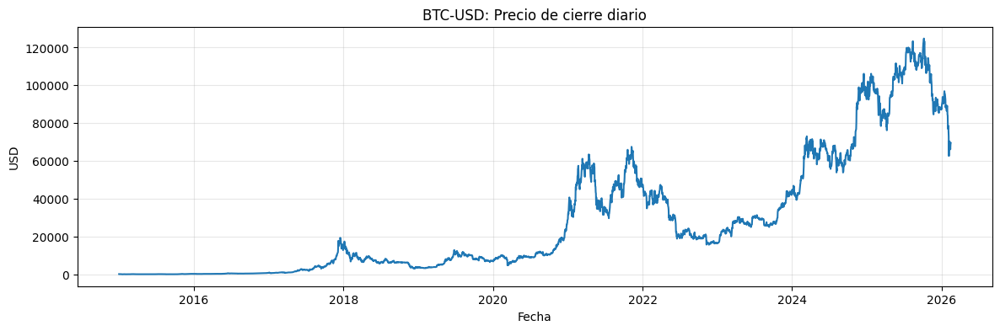
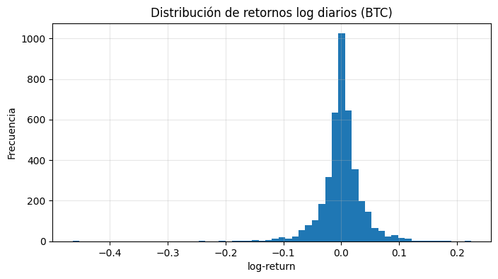
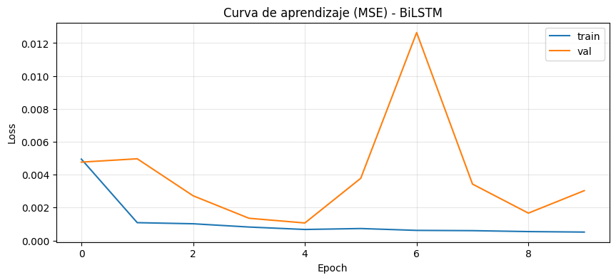
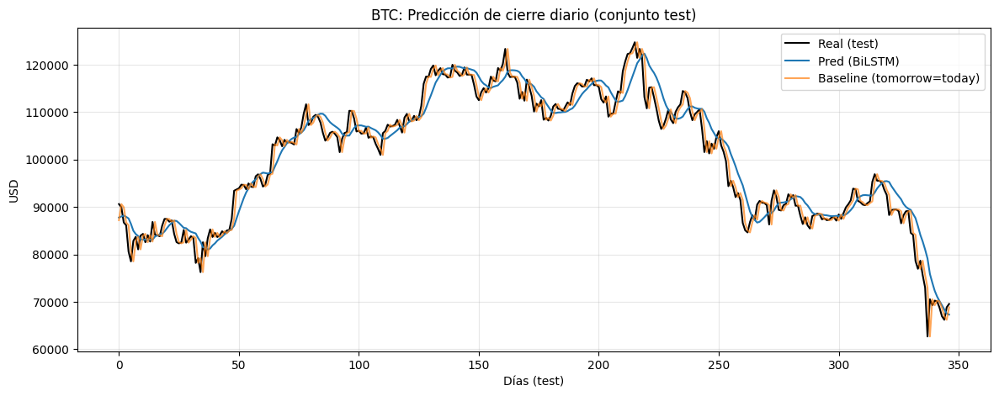

Predicción de Bitcoin (BTC) con Arquitecturas Avanzadas 🚀₿#
En este notebook cambiamos de un caso “productivo” (café) a un activo altamente volátil: Bitcoin (BTC-USD).
La meta NO es prometer “el santo grial del trading”. El objetivo es didáctico:
ver cómo preparar una serie financiera,
entrenar una arquitectura recurrente más potente (BiLSTM + Dropout),
y entender por qué LSTM puede ayudar en presencia de no linealidad, regímenes, y patrones temporales.
Aviso responsable: un modelo que predice bien en una partición temporal no implica que sea rentable al operar (hay costos, slippage, y cambios de régimen). Este notebook es para aprendizaje de modelado secuencial.
1. Contexto: ¿por qué BTC es un “stress test” para RNNs?#
Bitcoin tiene características que complican el pronóstico:
Volatilidad alta: cambios abruptos y colas pesadas.
No estacionariedad: el “comportamiento típico” cambia con el tiempo (bull/bear markets).
Regímenes: periodos con dinámicas distintas (euforia, pánico, lateralidad).
Ruido: gran parte del movimiento diario puede parecer aleatorio a corta escala.
Aun así, las redes LSTM se usan porque pueden:
capturar dependencias temporales no lineales,
aprender representaciones internas (memoria) que resumen el pasado,
manejar mejor el problema de gradiente desvaneciente frente a RNN simples.
2. Sobre el “mito” de TensorFlow Hub en Finanzas#
Es común preguntar: “¿No puedo descargar un modelo pre-entrenado que ya sepa predecir precios?”
En visión y NLP es común porque las imágenes y el lenguaje comparten estructuras generales.
En finanzas, cada mercado es un universo:
cambian reglas y microestructura,
hay shocks exógenos,
y el patrón histórico puede romperse.
Por eso, en práctica se construyen modelos entrenados en el activo específico y se reentrenan.
3. Obtención de datos: Yahoo Finance (yfinance)#
Usaremos yfinance para descargar BTC-USD diario desde 2015.
📁 Recomendación Jupyter Book (modo offline)#
Cuando construyes el Jupyter Book (por ejemplo en CI), puede no haber acceso a internet.
Por eso el notebook:
intenta descargar desde Yahoo Finance;
si falla, intenta cargar un archivo cacheado en:
data/BTC-USD.csv(recomendado)
Estructura sugerida del repo:
my-book/
content/
rnn/
05_btc_bilstm.ipynb
data/
Exportaciones.xlsx
BTC-USD.csv
import numpy as np
import pandas as pd
import matplotlib.pyplot as plt
from pathlib import Path
# Reproducibility (best-effort)
import tensorflow as tf
tf.random.set_seed(42)
np.random.seed(42)
WARNING:tensorflow:From C:\Users\legion\AppData\Local\Packages\PythonSoftwareFoundation.Python.3.11_qbz5n2kfra8p0\LocalCache\local-packages\Python311\site-packages\keras\src\losses.py:2976: The name tf.losses.sparse_softmax_cross_entropy is deprecated. Please use tf.compat.v1.losses.sparse_softmax_cross_entropy instead.
# -----------------------------------------
# Data acquisition with offline fallback
# -----------------------------------------
DATA_CSV_CANDIDATES = [
Path("data/BTC-USD.csv"),
Path("../data/BTC-USD.csv"),
Path("../../data/BTC-USD.csv"),
Path("BTC-USD.csv"),
]
def try_load_cached_csv() -> pd.DataFrame | None:
for p in DATA_CSV_CANDIDATES:
if p.exists():
df = pd.read_csv(p, parse_dates=["Date"])
df = df.set_index("Date").sort_index()
print(f"✅ Loaded cached BTC data from: {p.resolve()}")
return df
return None
df_btc = None
try:
import yfinance as yf # pip install yfinance
df_btc = yf.download("BTC-USD", start="2015-01-01", interval="1d", auto_adjust=False, progress=False)
if df_btc is None or len(df_btc) == 0:
raise RuntimeError("Empty download from yfinance.")
df_btc = df_btc.reset_index().set_index("Date").sort_index()
print(f"✅ Downloaded BTC-USD from Yahoo Finance. Rows: {len(df_btc)}")
# Save cache (best-effort) if running in a writable environment
out_cache = Path("data/BTC-USD.csv")
try:
out_cache.parent.mkdir(parents=True, exist_ok=True)
df_btc.reset_index().to_csv(out_cache, index=False)
print(f"💾 Cached data saved to: {out_cache.resolve()}")
except Exception as e:
print(f"⚠️ Could not write cache file (ok in read-only builds): {e}")
except Exception as e:
print(f"⚠️ yfinance download failed: {e}")
df_btc = try_load_cached_csv()
if df_btc is None:
raise FileNotFoundError(
"Could not obtain BTC data. "
"Install yfinance and ensure internet access, OR place a cached file at data/BTC-USD.csv."
)
# We will use the Close price
if "Close" not in df_btc.columns:
raise ValueError(f"Expected 'Close' column. Found: {list(df_btc.columns)}")
close = df_btc[["Close"]].dropna().astype(float)
print("Date range:", close.index.min().date(), "→", close.index.max().date())
display(close.head())
✅ Downloaded BTC-USD from Yahoo Finance. Rows: 4063
💾 Cached data saved to: D:\Documentos\RNN Manual\contenidos\data\BTC-USD.csv
Date range: 2015-01-01 → 2026-02-14
| Price | Close |
|---|---|
| Ticker | BTC-USD |
| Date | |
| 2015-01-01 | 314.248993 |
| 2015-01-02 | 315.032013 |
| 2015-01-03 | 281.082001 |
| 2015-01-04 | 264.195007 |
| 2015-01-05 | 274.473999 |
plt.figure(figsize=(14, 4))
plt.plot(close.index, close["Close"].values)
plt.title("BTC-USD: Precio de cierre diario")
plt.xlabel("Fecha")
plt.ylabel("USD")
plt.grid(True, alpha=0.3)
plt.show()
# Volatility hint: daily log-returns distribution
log_returns = np.log(close["Close"]).diff().dropna()
plt.figure(figsize=(8, 4))
plt.hist(log_returns.values, bins=60)
plt.title("Distribución de retornos log diarios (BTC)")
plt.xlabel("log-return")
plt.ylabel("Frecuencia")
plt.grid(True, alpha=0.3)
plt.show()


4. Formulación del problema: ventanas temporales#
Usaremos una ventana de LOOK_BACK=60 días (≈ 2 meses) para predecir el precio de cierre del día siguiente.
X: últimos 60 cierres (escalados)
y: cierre de mañana (escalado)
Nota: En finanzas a menudo se predicen retornos (más estacionarios) en lugar de precios. Aquí empezamos con precios por simplicidad, pero al final te dejo un reto para cambiar a retornos.
from sklearn.preprocessing import MinMaxScaler
# Convert to numpy
data = close.values # shape (T, 1)
# Train/Test split (time-based): 90% / 10%
LOOK_BACK = 60
# We split BEFORE scaling to avoid leakage
split_idx = int(len(data) * 0.90)
train_raw = data[:split_idx]
test_raw = data[split_idx:]
scaler = MinMaxScaler(feature_range=(0, 1))
train_scaled = scaler.fit_transform(train_raw)
test_scaled = scaler.transform(test_raw)
def make_windows(series_2d: np.ndarray, look_back: int) -> tuple[np.ndarray, np.ndarray]:
"""
Build supervised windows from a univariate series (T, 1).
Returns:
X: (N, look_back, 1)
y: (N, 1)
"""
X_list, y_list = [], []
for i in range(look_back, len(series_2d)):
X_list.append(series_2d[i - look_back : i, 0])
y_list.append(series_2d[i, 0])
X = np.array(X_list, dtype=float).reshape(-1, look_back, 1)
y = np.array(y_list, dtype=float).reshape(-1, 1)
return X, y
X_train, y_train = make_windows(train_scaled, LOOK_BACK)
X_test, y_test = make_windows(test_scaled, LOOK_BACK)
print("X_train:", X_train.shape, "y_train:", y_train.shape)
print("X_test :", X_test.shape, "y_test :", y_test.shape)
X_train: (3596, 60, 1) y_train: (3596, 1)
X_test : (347, 60, 1) y_test : (347, 1)
5. Baseline rápido: “mañana = hoy”#
Antes de deep learning, comparemos contra un baseline ingenuo:
predicción = último valor observado en la ventana
Si el modelo no supera esto, no está aportando mucho.
from sklearn.metrics import mean_absolute_error, mean_squared_error
# Baseline: predict y_t as the last value in the window (scaled)
baseline_pred_scaled = X_test[:, -1, 0].reshape(-1, 1)
# Back to real prices
y_test_real = scaler.inverse_transform(y_test)
baseline_pred_real = scaler.inverse_transform(baseline_pred_scaled)
def rmse(y_true: np.ndarray, y_hat: np.ndarray) -> float:
return float(np.sqrt(mean_squared_error(y_true, y_hat)))
baseline_rmse = rmse(y_test_real, baseline_pred_real)
baseline_mae = float(mean_absolute_error(y_test_real, baseline_pred_real))
print(f"Baseline (tomorrow=today) | RMSE: {baseline_rmse:.2f} | MAE: {baseline_mae:.2f}")
Baseline (tomorrow=today) | RMSE: 2138.20 | MAE: 1545.96
6. Arquitectura: Bidirectional LSTM + Dropout#
¿Por qué Bidirectional?#
Una BiLSTM procesa la secuencia:
hacia adelante (del pasado al presente)
y hacia atrás (del presente al pasado)
Ojo importante (forecasting):
No estamos usando “datos del futuro”. Dentro de cada ventana, solo hay datos del pasado. La bidireccionalidad solo ayuda a extraer relaciones internas dentro de esa ventana.
¿Por qué Dropout?#
Reduce overfitting “apagando” aleatoriamente neuronas durante el entrenamiento.
from tensorflow.keras.models import Sequential
from tensorflow.keras.layers import LSTM, Dense, Bidirectional, Dropout
from tensorflow.keras.callbacks import EarlyStopping, ReduceLROnPlateau
model = Sequential([
Bidirectional(LSTM(units=50, return_sequences=True), input_shape=(LOOK_BACK, 1)),
Dropout(0.2),
Bidirectional(LSTM(units=50, return_sequences=False)),
Dropout(0.2),
Dense(25, activation="relu"),
Dense(1)
])
model.compile(optimizer="adam", loss="mse")
model.summary()
callbacks = [
EarlyStopping(monitor="val_loss", patience=5, restore_best_weights=True),
ReduceLROnPlateau(monitor="val_loss", factor=0.5, patience=3, min_lr=1e-5),
]
WARNING:tensorflow:From C:\Users\legion\AppData\Local\Packages\PythonSoftwareFoundation.Python.3.11_qbz5n2kfra8p0\LocalCache\local-packages\Python311\site-packages\keras\src\layers\rnn\lstm.py:148: The name tf.executing_eagerly_outside_functions is deprecated. Please use tf.compat.v1.executing_eagerly_outside_functions instead.
WARNING:tensorflow:From C:\Users\legion\AppData\Local\Packages\PythonSoftwareFoundation.Python.3.11_qbz5n2kfra8p0\LocalCache\local-packages\Python311\site-packages\keras\src\optimizers\__init__.py:309: The name tf.train.Optimizer is deprecated. Please use tf.compat.v1.train.Optimizer instead.
Model: "sequential"
_________________________________________________________________
Layer (type) Output Shape Param #
=================================================================
bidirectional (Bidirection (None, 60, 100) 20800
al)
dropout (Dropout) (None, 60, 100) 0
bidirectional_1 (Bidirecti (None, 100) 60400
onal)
dropout_1 (Dropout) (None, 100) 0
dense (Dense) (None, 25) 2525
dense_1 (Dense) (None, 1) 26
=================================================================
Total params: 83751 (327.15 KB)
Trainable params: 83751 (327.15 KB)
Non-trainable params: 0 (0.00 Byte)
_________________________________________________________________
7. Entrenamiento#
Entrenaremos con validación temporal (el 10% final).
history = model.fit(
X_train, y_train,
validation_data=(X_test, y_test),
epochs=25,
batch_size=32,
verbose=1,
callbacks=callbacks
)
plt.figure(figsize=(10, 4))
plt.plot(history.history["loss"], label="train")
plt.plot(history.history["val_loss"], label="val")
plt.title("Curva de aprendizaje (MSE) - BiLSTM")
plt.xlabel("Epoch")
plt.ylabel("Loss")
plt.grid(True, alpha=0.3)
plt.legend()
plt.show()
Epoch 1/25
WARNING:tensorflow:From C:\Users\legion\AppData\Local\Packages\PythonSoftwareFoundation.Python.3.11_qbz5n2kfra8p0\LocalCache\local-packages\Python311\site-packages\keras\src\utils\tf_utils.py:492: The name tf.ragged.RaggedTensorValue is deprecated. Please use tf.compat.v1.ragged.RaggedTensorValue instead.
113/113 [==============================] - 11s 43ms/step - loss: 0.0049 - val_loss: 0.0048 - lr: 0.0010
Epoch 2/25
113/113 [==============================] - 3s 30ms/step - loss: 0.0011 - val_loss: 0.0050 - lr: 0.0010
Epoch 3/25
113/113 [==============================] - 3s 30ms/step - loss: 0.0010 - val_loss: 0.0027 - lr: 0.0010
Epoch 4/25
113/113 [==============================] - 4s 31ms/step - loss: 8.1868e-04 - val_loss: 0.0014 - lr: 0.0010
Epoch 5/25
113/113 [==============================] - 3s 30ms/step - loss: 6.7042e-04 - val_loss: 0.0011 - lr: 0.0010
Epoch 6/25
113/113 [==============================] - 4s 32ms/step - loss: 7.2729e-04 - val_loss: 0.0038 - lr: 0.0010
Epoch 7/25
113/113 [==============================] - 4s 32ms/step - loss: 6.1529e-04 - val_loss: 0.0126 - lr: 0.0010
Epoch 8/25
113/113 [==============================] - 3s 30ms/step - loss: 5.9900e-04 - val_loss: 0.0034 - lr: 0.0010
Epoch 9/25
113/113 [==============================] - 3s 31ms/step - loss: 5.4186e-04 - val_loss: 0.0017 - lr: 5.0000e-04
Epoch 10/25
113/113 [==============================] - 3s 31ms/step - loss: 5.1257e-04 - val_loss: 0.0030 - lr: 5.0000e-04

8. Evaluación y visualización (precio real)#
Calculamos RMSE/MAE en la escala real (USD) y comparamos con el baseline.
pred_scaled = model.predict(X_test, verbose=0)
pred_real = scaler.inverse_transform(pred_scaled)
y_test_real = scaler.inverse_transform(y_test)
model_rmse = rmse(y_test_real, pred_real)
model_mae = float(mean_absolute_error(y_test_real, pred_real))
print(f"BiLSTM | RMSE: {model_rmse:.2f} | MAE: {model_mae:.2f}")
print(f"Baseline | RMSE: {baseline_rmse:.2f} | MAE: {baseline_mae:.2f}")
BiLSTM | RMSE: 3458.93 | MAE: 2629.55
Baseline | RMSE: 2138.20 | MAE: 1545.96
plt.figure(figsize=(14, 5))
plt.plot(y_test_real, color="black", label="Real (test)")
plt.plot(pred_real, label="Pred (BiLSTM)")
plt.plot(baseline_pred_real, label="Baseline (tomorrow=today)", alpha=0.7)
plt.title("BTC: Predicción de cierre diario (conjunto test)")
plt.xlabel("Días (test)")
plt.ylabel("USD")
plt.grid(True, alpha=0.3)
plt.legend()
plt.show()

9. Interpretación honesta#
Si tu predicción parece “un paso atrás”, es muy común: el baseline “mañana = hoy” ya es fuerte en precios.
En BTC, cambios de régimen pueden romper patrones aprendidos.
A veces el modelo mejora métricas pero visualmente sigue “suavizando” picos.
📌 Lo valioso didácticamente es ver:
cómo se evita leakage (split temporal + scaler en train),
cómo comparar contra un baseline,
cómo arquitecturas con memoria pueden capturar estructura dentro de una ventana.
10. Guardar el modelo (tu “pre-entrenado”)#
Si quieres reutilizarlo sin reentrenar, guarda el modelo y el scaler.
Para un curso, recomiendo guardar el modelo y documentar la fecha de entrenamiento + rango de datos.
# Save Keras model
model_out = Path("models/btc_bilstm.keras")
try:
model_out.parent.mkdir(parents=True, exist_ok=True)
model.save(model_out)
print(f"✅ Model saved to: {model_out.resolve()}")
except Exception as e:
print(f"⚠️ Could not save model (ok in read-only builds): {e}")
✅ Model saved to: D:\Documentos\RNN Manual\contenidos\models\btc_bilstm.keras
11. Reto final (más realista en finanzas)#
En lugar de predecir el precio, prueba predecir el retorno:
[ r_t = \log(P_t) - \log(P_{t-1}) ]
¿Por qué? Los retornos suelen ser más estacionarios que el precio.
Tareas:
Construye la serie de retornos log.
Repite el pipeline (ventanas, split temporal).
Predice retorno y reconstruye el precio acumulando retornos.